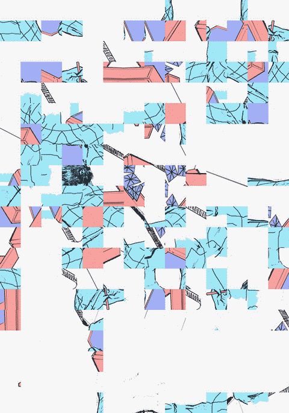
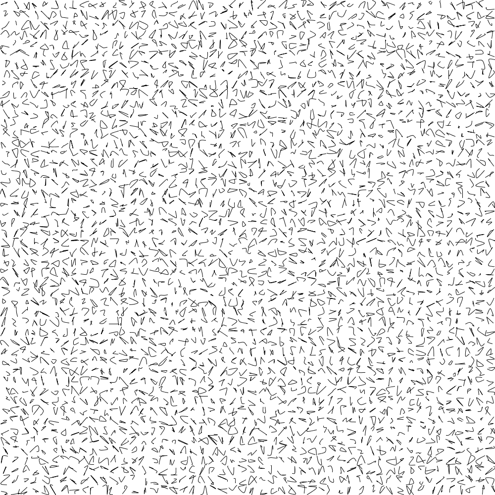

Gaëtan Robillard
Avec Marie-Lou Barbier, Valentin Dufois, Alexane Le Guern, Kenthyvong Tan,
le Laboratoire des Intuitions (ESBA TALM Tours), et l’IMAC (ESIPE – UPEM)
–
Images génériques (indexer, générer, apprendre) est un atelier et un projet de création logicielle. Il s’agit de développer une machine graphique – générative, qui produit du sens à partir d’un processus participatif. Ce processus fait appel à un questionnement sur la relation entre individu, algorithme et apprentissage (humain ou machine). Dès lors, comment structurer un espace cognitif capable de modéliser ce rapport ? Pour quelles représentations ? Et pour quelle esthétique ?
Réflexions
Dans les années 60 et 70, le progrès scientifique et technologique annonce un changement d’ère et de modèle industriel ou culturel : du fordisme à la société de l’information, du modernisme d’après guerre à un art post moderne dématerialisé [1]. Si une grande majorité du milieu intellectuel et artistique rejette alors l’effort technologique de l’époque, le mouvement New Tendencies qui emerge à Zagreb s’empare de cet essor rapide pour projeter un futur qui se serait libéré de l’aliénation et de l’opression. Pour les NT, produire un art algorithmique (Computer art) et une recherche visuelle avec et par l’ordinateur, c’est finalement rendre visible des processus apperceptifs afin de donner à chacun la possibilité de négocier ce monde à venir.
De toute évidence, il est nécessaire d’investiguer aujourd’hui les suites d’une telle proposition. Le numérique est devenu un terme indiscociable de toute activité sociale contemporaine. L’image est omniprésente et son caractère numérique affecte la globalité de notre monde. Les algorithmes refondent l’industrie et engendrent de nouvelles manières de gouverner: du techno-politique [2] à la “gouvernance algorithmique”. Dans les mathématiques, certains chercheurs s’inquiètent de la manière dont la technologie de l’intelligence artificielle en vient à “opacifier” les aspects les plus fondamentaux des théories scientifiques [3].
Qu’en est-il de la place réservée à l’individu ? Qu’en est-il de la construction du sujet – pour reprendre les termes de l’épistémologue Jean Piaget, dans un monde qui se compose avec les algorithmes et maintenant avec l’intelligence artificielle ? L’art avec les algorithmes peut-il être envisagé comme un terrain d’émancipation ? Comment représenter l’individu en prise avec les algorithmes ? Comment concevoir des situations cognitives et un espace à même de faire se rencontrer individus et algorithmes?
Notes
[1] Armin Medosch, New Tendencies : Art at the Threshold of the Information Revolution (1961 – 1978), MIT Press, Juin 2016
[2] Cf plateforme TECHNOPOLITICS : www.technopolitics.info
[3] Giuseppe Longo, “Intelligence artificielle, bêtise artificielle et fonction du calcul”, Entretiens du nouveau monde industriel, décembre 2018, Centre Pompidou, Paris
Atelier
Le développement du projet repose sur la création d’un atelier ouvert et itinérant dont le premier intitulé est le suivant : “Quels dess(e)ins pour le code ?”. Il s’agit d’un atelier de création en images génératives, art logiciel et esthétique computationnelle. Nous y aborderons : la pratique du dessin, la création d’images par l’écriture d’algorithmes (Processing), la transposition de dessins en code, l’historicité art-algorithmes, la réflexion sur les algorithmes et l’intelligence artificielle, l’expérimentation d’un logiciel spécialement conçu et d’un outil de traçage.
De façon réflexive, nous produirons des ensembles d’images capables de représenter cette situation d’apprentissage, et nous discuterons un ensemble de procédures visuelles et algorithmiques que nous destituerons ou recombinerons pour générer de nouvelles formes. L’atelier se fixe pour objectif d’élaborer progressivement un index de formes graphiques procédurales, de développer un logiciel spécifique de manière itérative, et de concevoir ensuite une installation qui incorporera les résultats de cette expérience collective.
L’atelier est développé avec la participation une classe d’art plastique au niveau 1ere (Lycée Colbert -Paris) notamment à l’occasion d’une mission de résidence avec le Lycée Colbert et la Gaîté lyrique, mais aussi avec des étudiants-ingénieurs de la formation IMAC.
Outils : ordinateurs portables, tablettes, environnement Processing, deux traceurs Makeblock XY-Plotter Robot Kit V2.0, logiciel spécifiquement conçu (avec la participation des étudiants Ingénieurs IMAC), tables, chaises et mur d’affichage, consommables papiers et feutres


Crédits
Art et recherche visuelle : Gaëtan Robillard
Ingéniérie créative : Marie-Lou Barbier, Valentin Dufois, Alexane Le Guern, Kenthyvong Tan
Collaboration pédagogie : Luce Mongo Mboussa
Coordination Dynamograma VII : Thierry Mouillé, David Zerbib
Soutiens
Laboratoire des Intuitions (ESBA TALM Tours)
Formation IMAC (ESIPE – UPEM)
Gaîté Lyrique
Lycée Colbert – Paris